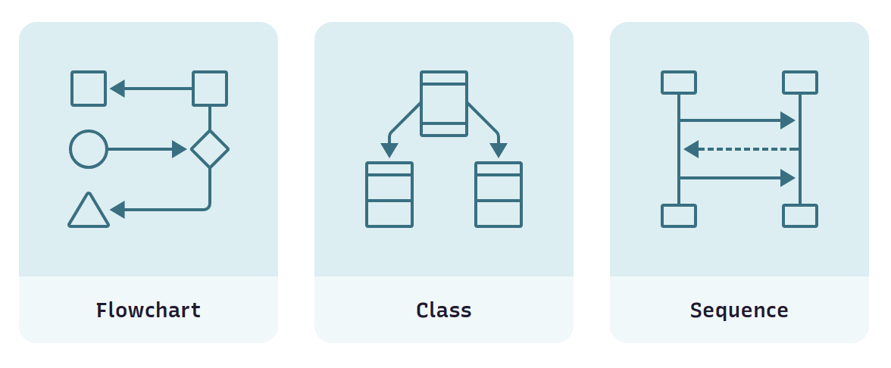
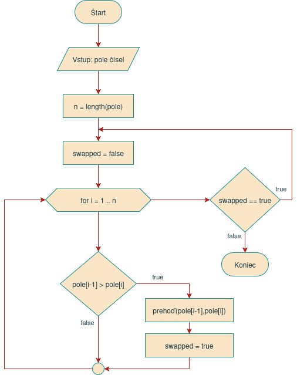

Cvičenie 1: Úvod do predmetu, vývojový diagram¶
Úvodné cvičenie je venované príprave vášho počítača, inštalácii potrebných nástrojov a programov a praktickému úvodu do ekosystému Java. Okrem toho sa na tomto a na nasledujúcich cvičeniach stručne zopakujú témy programovania, ktoré ste preberali v predchádzajúcich rokoch. Vysvetlí sa tiež, ktoré znalosti by už študent mal ovládať, nakoľko tento predmet nie je úvodným predmetom pre programovanie ako také.

Opakovanie z minulých rokov¶
Java Development Kit¶
Ktorú verziu Javy použiť?
Nová verzia Javy vychádza každých 6 mesiacov. Pre bežné použitie však nie je dobré používať vždy tú najnovšiu, ale radšej použite verziu LTS (long-term support), ktorá vychádza každé dva roky. Je stabilnejšia a má dlhú podporu aktualizácii opráv chýb a bezpečnostných záplat.
Verzie Javy z podporou LTS sú verzie 17, 21 a 25. Pre viac informácii pozri stránku o histórii verzií Javy
Po úspešnej inštalácii si funkčnosť overte tak, že si otvorte nové okno konzoly a v príkazovom riadku spusťte príkaz java --version.
IDE¶

Pre komfortné programovanie v Jave je vhodné, aby ste používali vývojové prostredie, po anglicky Integrated Development Environment (IDE). Na tomto predmete budeme pracovať vo vývojovom prostredí IntelliJ IDEA od firmy JetBrains. Ide o najpopulárnejšie a najviac premakané vývojové prostredie pre jazyk Java.
Program ItelliJ IDEA si stiahnite a nainštalujte z oficiálnej stránky https://www.jetbrains.com/idea/download. K dispozícii je bezplatná verzia Community Edition a platená verzia Ultimate. Ako študenti SPŠE v Prešove máte jedinečnú možnosť používať platenú verziu Ultimate úplne zadarmo.
Ako si aktivovať IntelliJ IDEA Ultimate
Pre aktiváciu platenej verzie je potrebné
- zaregistrovať sa na stránke https://account.jetbrains.com/signup s použitím svojej školskej e-mailovej adresy.
- požiadať o školskú licenciu na stránke https://www.jetbrains.com/shop/eform/students. Vyplnenie formulára a potvrdenie e-mailovej adresy vám zaberie 3 minúty a školskú licenciu získate automaticky ihneď po zaslaní žiadosti.
- prihlásiť sa do vyššie vytvoreného konta v programe IntelliJ IDEA. Prihlásenie urobíte v okne Manage Subscriptions ktoré nájdete v sekcii Help, alebo v úvodnom okne po stlačení na ikonku vľavo dole.
IntelliJ IDEA nie je zďaleka jediné vývojové prostredie pre jazyk Java. Medzi ďalšie populárne IDE-čka patria programy Netbeans a Eclipse IDE. Veľa programátorov má tiež v obľube používať nástroj Visual Studio Code, čo je taký univerzálny editor pre veľké množstvo jazykov, a zvláda celkom dobre aj Javu. Medzi jeho najväčšie výhody patrí jednoduchosť, rýchlosť, veľké množstvo rozšírení a výborná podpora pre nástroje umelej inteligencie.
Vývojový diagram¶
Základné bloky vývojového diagramu¶
| Príklad | Typ symbolu | Popis |
|---|---|---|
| Terminál | Označuje začiatok a koniec procesu. Niekedy nazývaný aj terminátor. |
| Vstup/Výstup | Vstup a výstup dát, napr. načítanie čísla, vypísanie výsledku, ... |
| Operácia, proces | Bežný príkaz, operácia alebo iný konkrétny krok procesu |
| Rozhodovanie | Rozhodovacia funkcia, podmienka. Má viacero výstupov, označených podľa toho, aký výsledok rozhodovania môže nastať. |
| Podproces | Podprogram, metóda alebo funkcia, ktorej proces je zakreslený na inom mieste vývojového diagramu |
Príklad 1.1: Súčet dvoch čísel
flowchart TD
Start([Štart]) --> Input1[/Prečítať číslo1/]
Input1 --> Input2[/Prečítať číslo2/]
Input2 --> Sum[súčet = číslo1 + číslo2]
Sum --> Output[/Vypísať súčet/]
Output --> End([Koniec])Príklad 1.2: Delenie dvoch čísel
flowchart TD
Start([Štart]) --> Input1[/Prečítať delenec/]
Input1 --> Input2[/Prečítať deliteľ/]
Input2 --> Test{deliteľ == 0}
Test --> |Áno|Error[/Vypísať "Nulou sa nedá deliť"/]
Test --> |Nie|Div[podiel = delenec / deliteľ]
Div --> Output[/Vypísať podiel/]
Output --> End([Koniec])
Error --> EndPríklad 1.3: Kalkulačka
flowchart TD
Start([Štart]) --> Prompt[/Vypísať menu s možnosťami: S, P, A, X/]
Prompt --> Read[/Vstup: voľba užívateľa/]
Read --> Choice{Čo si užívateľ vybral?}
Choice --> |S|Add[[Súčet]]
Choice --> |P|Div[[Podiel]]
Choice --> |A|Abs[[Absolútna hodnota]]
Choice --> |X|End([Koniec])
Add --> Prompt
Div --> Prompt
Abs --> Prompt
AStart([Absolútna hodnota]) --> Input1[/Prečítať číslo/]
Input1 --> Test{číslo < 0}
Test --> |Áno|Inv[číslo = číslo * -1]
Test --> |Nie|Output[/Vypísať číslo/]
Inv --> Output
Output --> AEnd([Koniec])
classDef empty width:0pxPríklad 1.4: Praženica na cibuľke
flowchart TD
Start([Štart]) --> InitEgg[[Pripraviť vajíčka]]
InitEgg --> S0[Dať panvicu na sporák]
S0 --> InitOnion[[Opražiť cibuľu]]
InitOnion --> S1[Vyliať vajíčka do panvice s opraženou cibuľou]
S1 --> S2[Miešať]
S2 --> Test{praženica == riedka}
Test --> |true|S2
Test --> |false|S3[Vypnúť sporák]
S3 --> S4[Dať praženicu na tanier a podávať]
S4 --> End([Koniec])
AStart([Pripraviť vajíčka]) --> A1[/Vybrať vajíčka/]
A1 --> AP1[Rozbiť vajíčka a vyliať do misky]
AP1 --> AP2[Rozmiešať]
AP2 --> AEnd([Koniec])
BStart([Opražiť cibuľu]) --> B1[/Vybrať cibuľu, olej a korenie/]
B1 --> BP1[Očistiť a pokrájať cibuľu]
BP1 --> BP2[Dať do panvice olej a cibuľu, zapnúť sporák]
BP2 --> BP3[Miešať]
BP3 --> BTest{cibuľa == opražená}
BTest --> |true|BKor[Pridať korenie a soľ]
BKor --> BEnd([Koniec])
BTest --> |false|BP3Príklad 1.5: Pracovný tok (Workflow) predajcu áut
flowchart LR
Start([Štart]) --> Test{Nové alebo jazdené auto?}
Test --> |Nové|New[Nakonfigurovať nové vozidlo]
Test --> |Jazdené|Old[Vybrať auto zo skladových zásob]
New --> P1[Ponúknuť zimné pneumatiky]
Old --> P1
P1 --> O1((A ))
O2(( A)) --> P3[Ponúknuť poistenie]
P3 --> P4[Ponúknuť predĺženie záruky]
P4 --> P5[Ponúknuť vernostný program]
P5 --> End([Koniec])Úloha do zošita: Vývojový diagram
Do zošita si zakreslite jeden jednoduchý vývojový diagram a jeden diagram s rozhodovacím blokom.
Splnenie úlohy vám budeme kontrolovať.
Zbierka príkladov vývojových diagramov¶
V tejto časti uvádzame zopár úloh pre tvorbu vývojových diagramov. Po kliknití na príklad sa vám ukáže daný diagram.
Príklad 1.6: Zistenie väčšieho z dvoch čísel
flowchart TD
Start([Štart]) --> Vstup[/Načítaj čísla: x, z/]
Vstup --> Test{x > y}
Test -->|true|A[/Výstup: x/]
Test -->|false|B[/Výstup: y/]
A --> End([Koniec])
B --> EndDoplňujúce otázky
- Čo sa stane, ak sú čisla rovnaké?
- Ako by ste upravili diagram tak, aby pokrýval všetky možnosti?
Príklad 1.7: Výpis radu čísel
flowchart TD
Start([Štart]) --> Vstup[/Načítaj čísla: from, to/]
Vstup --> P[i = from]
P --> Test{i <= to}
Test -->|false| End([Koniec])
Test -->|true|Print[/Výstup: i/]
Print --> Step[i = i + 1]
Step --> TestDoplňujúce otázky
- Funguje tento algoritmus pre akúkoľvek dvojicu čísel?
- Vypíše sa aj číslo
to?
Príklad 1.8: Hľadanie čísla
flowchart TD
Start([Štart]) --> Prompt[/Uhádni na aké číslo myslím/]
Prompt --> R[y = random_integer]
R --> Vstup[/Načítaj číslo x/]
Vstup --> EQ{x == y}
EQ -->|true| WIN[/Uhádol si, bolo to číslo Y/]
WIN --> End([Koniec])
EQ -->|false|CMP{x > y}
CMP -->|true| BIG[/Hľadané čislo je menšie, hádaj znova/]
BIG --> Vstup
CMP -->|false| SMOL[/Hľadané čislo je väčšie, hádaj znova/]
SMOL --> VstupDoplňujúce otázky
- Ako by vyzeral vývojový diagram, ak by mal súťažiaci iba 10 pokusov?
- Čo by trebalo pridať, aby vo výslednom výpise sa uviedlo, na koľko pokusov bolo číslo uhádnuté
Príklad 1.9: Výpočet aritmetického priemeru
flowchart TD
Start([Štart]) --> Init[počet = 0, súčet = 0]
Init --> Prompt[/Zadaj ďalšie číslo, alebo 'X' ak hotovo/]
Prompt --> Hotovo{vstup == 'X'}
Hotovo -->|true| Print[[Výpis priemeru]]
Print --> END([Koniec])
Hotovo -->|false| P1[počet = počet + 1]
P1 --> P2[súčet = súčet + vstup]
P2 --> Prompt
AStart([Výpis priemeru])
AStart --> P3[priemer = súčet / počet]
P3 --> Out[/Vypíš priemer/]
Out --> AEnd([Koniec])Doplňujúce otázky
- Čo sa stane, ak nezadáme žiadne číslo?
- Čo sa stane, ak zadáme písmeno iné ako 'X'?
Príklad 1.10: Zoradenie poľa algoritmom Bubble Sort
flowchart TD
Start([Štart]) --> InitV[/"Vstup: pole čísel"/]
InitV --> N["n = length(pole)"]
N --> InitSwap["swapped = false"]
InitSwap --> Loop["i = 1"]
Loop --- C1[ ]:::empty
C1 --> Test{"pole[i - 1] > pole[i]"}
Test --> |true|Swap["prehoď_prvky(i-1, i)"]
Test --> |false|Step
Swap --> SetSwapped["swapped = true"]
SetSwapped --> Step["i = i + 1"]
Step --> TestLoop{"i < n"}
TestLoop -->|true| C1
TestLoop -->|false| TestSwapped{"swapped == true"}
TestSwapped -->|true| InitSwap
TestSwapped -->|false| End([Koniec])
classDef empty width:0pxDoplňujúce otázky
- Prečo vnútorný cyklus začína od čísla 1 a nie od čísla 0?
- Algoritmus by sa dal optimalizovať, ako?
Vývojový diagram s použitím neštandardného symbolu cyklu for, vytvorený v programe draw.io

Príklad 1.11: Výpočet faktoriálu pomocou iterácie
flowchart TD
Start([Štart]) --> Vstup[/Načítaj číslo/]
Vstup --> Init[i = 1, výsledok = 1]
Init --> Test{i <= číslo}
Test -->|false| Out[/Vypíš výsledok/]
Test -->|true| P[výsledok = výsledok * i]
P --> P2[i = i + 1]
P2 --> Test
Out --> End([Koniec])Doplňujúce otázky
- Aké najväčšie číslo by váš program vedel spracovať?
Príklad 1.12: Výpočet faktoriálu pomocou rekurzie
flowchart TD
Start([Štart]) --> Vstup[/Načítaj číslo n/]
Vstup --> FN[["výsledok = faktorial(n)"]]
FN --> Out[/Vypíš výsledok/]
Out --> End([Koniec])
AStart(["faktorial(x)"]) --> Test{x == 0}
Test --> |true| P1[výsledok = 1]
Test --> |false| P2[["výsledok = x * faktorial(x-1)"]]
P1 --> AEnd([return výsledok])
P2 --> AEndDoplňujúce otázky
- Ktorá verzia algoritmu je ľahšia na pochopenie?
- Ktorá verzia algoritmu je ľahšia na programovanie?
Príklad 1.13: Súčet prvých N prirodzených čísel
flowchart TD
Start([Štart]) --> Init[výsledok = 0]
Init --> Vstup[/Načítaj číslo n/]
Vstup --> Test{n == 0}
Test -->|true|Print[/Výstup: výsledok/]
Print --> End([Koniec])
Test -->|false|P[výsledok = výsledok + n]
P --> P1[n = n - 1]
P1 --> TestDoplňujúce otázky
- Aký bude priebeh algoritmu, ak zadáme číslo, ktoré nie je prorodzené?
- Ako by ste upravili algoritmus tak, aby pokrýval všetky možnosti vstupu?
Príklad 1.14: Povrch a objem valca
flowchart TD
Start([Štart]) --> VstupR[/Načítaj polomer/]
VstupR --> VstupV[/Načítaj výšku/]
VstupV --> S1[[Povrch valca]]
S1 --> S2[[Objem valca]]
S2 --> End([Koniec])
PStart([Objem valca]) --> PP1["SP = 3.14 \* polomer \* polomer"]
PP1 --> PP2[objem = SP * výška]
PP2 --> PV[/Výstup: objem/]
PV --> PEnd([Koniec])
VStart([Povrch valca]) --> VP1["SP = 3.14 \* polomer \* polomer"]
VP1 --> VP2["SPL = 2 \* 3.14 \* polomer \* výška"]
VP2 --> VP3[povrch = 2 * SP + SPL]
VP3 --> VV[/Výstup: povrch/]
VV --> VEnd([Koniec])Doplňujúce otázky
- Algoritmus zbytočne počíta jednu časť dvakrát. Ako by ste upravili diagram tak, aby sa počítala iba raz?
Príklad 1.15: Nájdenie čísla v poli
flowchart TD
Start([Štart]) --> InitV[/"Vstup: pole čísel"/]
InitV --> InitX[/Vstup: hľadané číslo x/]
InitX --> P["i = 0"]
P --> P2["n = length(pole)"]
P2 --> Test{i < n}
Test --> |false|Fail[/Výstup: číslo sa nenašlo/]
Test --> |true|Test2{"pole[i] == x"}
Test2 --> |true|Win[/Výstup: číslo sa nachádza na pozícii i/]
Test2 --> |false|Step["i = i + 1"]
Step --> Test
Fail --> End([Koniec])
Win --> KoniecDoplňujúce otázky
- Čo ak sa v poli nachádza hľadané číslo viac krát? Ako upraviť algoritmus, aby vypísal všetky nájdenia?
- Ak by boli čísla v poli zoradené, dal by sa algoritmus optimalizovať?
Diagramy ako kód¶
Súčasným trendom v moderných prístupoch ku tvorbe diagramov je technika Diagrams as Code (DaC). Ide o postup, pri ktorom sa diagram nekreslí v grafickom editore, ale pomocou na to určenej syntaxe sa zapíše do textového súboru, často priamo do dokumentácie alebo komentárov zdrojového kódu. Výsledný obrázok sa potom automaticky vygeneruje pomocou dokumentačného nástroja.
Takéto diagramy sa dajú ľahko upraviť a verzionovať spolu s kódom a jednoducho sa vložia do dokumentácie a webových stránok. Veľkou výhodou je taktiež možnosť použitia umelej inteligencie, ktorá vie takéto diagramy písať a synchronizovať so zmenami v zdrojovóm kóde programu.
Medzi nevýhody prístupu Diagrams as Code patrí nevyzrelosť nástrojov na písanie takýchto diagramov, nemožnosť precízne určiť polohu a tvar blokov a šípiek, a pri automatickom písaní diagramov aj nižšia pridaná hodnota (low signal) oproti ručne písaným diagramom. Netechnický ľudia môžu mať taktiež problém s písaním takéhoto diagramu, nakoľko ide vlastne o špeciálny programovací jazyk (Domain-specific Language, DSL)
Praktická úloha na cvičení
Otvorte si na vašom prehliadači stránku https://mermaid.live. Vytvorte v ňom jednoduchý vývojový diagram.
V časti Actions si vyexportujte váš vývojový diagram do formátu .png a pošlite ho vášmu učiteľovi na EduPage do konca vyučovacej hodiny.
Okrem vývojových diagramov nástroj Mermaid umožňuje vytvoriť aj iné typy diagramov používaných pri návrhu a vývoji softvéru. Tento nástroj vám môže pomôcť, ak budete potrebovať vytvoriť diagramy do svojej práce či zadania a nebude sa vám chcieť kresliť ich ručne.
Upozornenie
Nástroj Mermaid má niektoré nedostatky, ktoré v niektorých prípadoch komplikujú tvorbu vývojových diagramov. Najväčší problém majú so šípkami smerom späť a pri symbole cyklusu for (ktorého použitie je neštandardné a využíva sa hlavne pri výuke). Ak je potrebná formálna presnosť je lepšie použiť grafický editor diagramov ako napr. draw.io.
Pseudokód¶
Pseudokód je spôsob zápisu algoritmu v prirodzenom jazyku, podobnom programovaciemu, ale bez striktnej syntaxe. Pomáha plánovať kód. Taktiež pomáha vysvetliť, ako daný algoritmus funguje. Pseudokód je určený hlavne na zápis algoritmov a podobá sa na zdrojový kód. Pre písanie pseudokódu neexistujú žiadne pravidlá a väčšinou sa pseudokód podobá na programovací jazyk, ktorý daný autor chce použiť na implementáciu svojho algoritmu.
Úloha do zošita: Pseudokód
Do zošita si napíšte pseudokód pre aspoň jeden z vašich vývojových diagramov, ktoré máte v zošite zakreslené.
Splnenie úlohy vám budeme kontrolovať.
Zhrnutie cvičenia¶
- Zopakovať si základy programovania z minulých rokov
- Ak používam Windows, nainštalovať si PowerShell
- Nainštalovať si Javu JDK 21 LTS v distribúcii Temurin
- Overiť si, či Java beží správne pomocou
java --version
- Overiť si, či Java beží správne pomocou
- Nainštalovať si vývojové prostredie IntelliJ IDEA
- Aktivovať si školskú licenciu pre bezplatné použitie verzie Ultimate
- Zopakovať si 5 základných symbolov vývojového diagramu
- Ovál - Terminál
- Rovnobežník - Vstup/Výstup
- Obdĺžnik - Operácia, proces
- Kosoštvorec - Rozhodovanie
- Obdĺžnik so zvislými čiarami - Podproces
- Vytvoriť jednoduchý vývojový diagram
- Vytvoriť vývojový diagram s rozhodovaním
- Vytvoriť vývojový diagram v editore Mermaid Live
- Exportovať diagram do formátu .png
- Zaslať vyexportovaný diagram učiteľovi na EduPage
- Vytvoriť pseudokód daného algoritmu
Poznámky do zošita
V zošite je potrebné mať napísané aspoň tieto poznámky:
Učebnica na stránke oop.wagjo.com
PRÍPRAVA
Pre programovanie je potrebné mať Javu JDK (Java Development Kit).
Odporúčaná je distribúcia Temurin.
Akú Javu máme:
- príkaz: java --version
- nová verzia vychádza každých 6m
- posledné stabilné verzie Javy sú 17, 21 a 25
IDE (Integrated Development Environment):
- vývojové prostredie
- uľahčuje programovanie
- IntelliJ IDEA
ÚVOD DO DIAGRAMOV
Vývojový diagram znázorňuje kroky procesu alebo algoritmu.
V praxi sa používa v zjednodušenej forme.
Dopĺňa iné typy diagramov.
>> zapísať tabuľku so základnými typmi symbolov vývojového diagramu.
>> nakresliť jeden jednoduchý vývojový diagram a jeden diagram s rozhodovacím blokom
DIAGRAMY AKO KÓD
"Diagram as Code" alebo DaC sú diagramy vo forme textu.
Vieme ich dať do dokumentácie alebo zdrojového kódu.
Používame nástroj http://mermaid.live
Vlastnosti:
- generované automaticky z textu
- ľahšie sa udržiava aktuálny
- vie ho vytvárať a meniť AI
Nevýhody:
- nezrelosť nástrojov
- musíte vedieť špecifickú syntax
- strata precíznej kontroly vizuálu
PSEUDOKÓD
Pseudokód je zápis algoritmu v prirodzenom jazyku, bez pravidiel.
Pomáha nám vysvetliť algoritmus a plánovať kód.
>> zapísať pseudokód jedného z vývojových diagramov
Skúšanie a kontrola vedomostí
Na ďalšej hodine budeme kontrolovať nasledovné veci:
- Správne nainštalovaná Java JDK 21
- Správne nainštalovaný program IntelliJ IDEA
- Zapísané poznámky z hodiny vo vašom zošite
Ústne skúšanie alebo krátka 5-minútovka:
- Základné symboly vývojového diagramu a ich význam
- Vedieť čo je Diagram as Code, uviesť jeho výhody a nevýhody
- Vytvorenie vývojového diagramu pre danú úlohu
- Vytvorenie pseudokódu danej úlohy alebo algoritmu